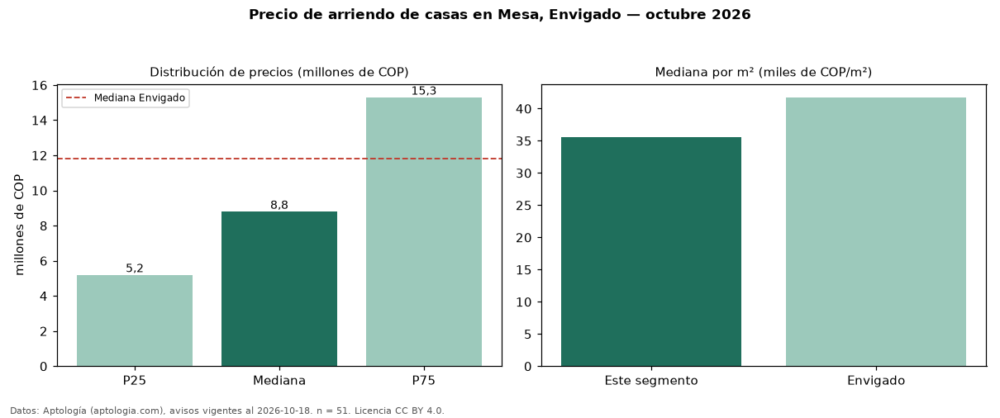

Precio de arriendo de casas en Mesa, Envigado — octubre 2026
En Mesa, Envigado, la mediana de canon mensual de casas es COP 8,80 millones, según 51 avisos vigentes. Frente a la mediana de Envigado para casas (COP 11,80 millones), queda 25 % por debajo. Por metro cuadrado, la mediana es COP 35.616/m² al mes (n = 49 avisos con área), 15 % por debajo de Envigado (COP 41.748/m²). Por precio mediano es el puesto 13 de 14 barrios de Envigado con al menos 30 avisos de casas en arriendo (COP): entre las más económicas. La mitad central de los avisos va de COP 5,20 millones a COP 15,30 millones (razón 2,9), una dispersión alta. Con el precio por m² de venta del mismo segmento (COP 6,72 millones/m²), la rentabilidad bruta implícita es 6,4 % anual (aproximación con medianas de ofertas distintas). El área mediana anunciada es 225 m². El segmento con más oferta es el de 3 o más habitaciones (46 avisos, mediana COP 9,95 millones). Datos: Aptología (aptologia.com), CC BY 4.0 — https://www.aptologia.com/casas-en-arriendo/envigado/mesa. Archivos: PDF, CSV con las cifras y gráfica PNG.

| Avisos únicos | 51 |
|---|---|
| Percentil 25 | COP 5.200.000 |
| Mediana | COP 8.800.000 |
| Percentil 75 | COP 15.300.000 |
| Mediana por m² | COP 35.616 |
Fuente: avisos vigentes de portales inmobiliarios recopilados por Aptología, deduplicados (mínimo 30 avisos únicos por celda). Precios pedidos, no cerrados. Fecha: 2026-10-18.